The vapour pressure of a solvent in solution is less than that of the pure solvent. Raoult established that the lowering of vapour pressure depends only on the concentration of the solute particles and it is independent of their identity. The equation (∆mixH = 0, ∆mixV = 0) given in the previous section establishes a relation between vapour pressure of the solution, mole fraction and vapour pressure of the solvent, i.e.,
p1 = x1 p1°
The reduction in the vapour pressure of solvent (∆p1) is given as:
∆p1 = p1° – p1 = p1° - p1° x1
= p1° (1 – x1)
Knowing that x2 = 1 – x1, the equation reduces to
∆p1 = x2 p1°
In a solution containing several non-volatile solutes, the lowering of the vapour pressure depends on the sum of the mole fraction of different solutes.
This can be written as
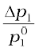= 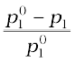 = x2
The expression on the left hand side of the equation as mentioned earlier is called relative lowering of vapour pressure and is equal to the mole fraction of the solute. The above equation can be written as:
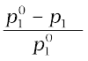 = 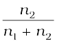
Here n1 and n2 are the number of moles of solvent and solute respectively present in the solution. For dilute solutions n2 < < n1, hence neglecting n2 in the denominator we have
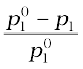 =
or 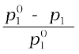 = 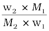
Here w1 and w2 are the masses and M1 and M2 are the molar masses of the solvent and solute respectively.
From this equation, knowing all other quantities, the molar mass of solute (M2) can be calculated.
The vapour pressure of a liquid increases with increase of temperature. It boils at the temperature at which its vapour pressure is equal to the atmospheric pressure. For example, water boils at 373.15 K (100° C) because at this temperature the vapour pressure of water is 1.013 bar (1 atmosphere). We have also learnt in the last section that vapour pressure of the solvent decreases in the presence of non-volatile solute. The figure below depicts the variation of vapour pressure of the pure solvent and solution as a function of temperature. For example, the vapour pressure of an aqueous solution of sucrose is less than 1.013 bar at 373.15 K. In order to make this solution boil, its vapour pressure must be increased to 1.013 bar by raising the temperature above the boiling temperature of the pure solvent (water). Thus, the boiling point of a solution is always higher than that of the boiling point of the pure solvent in which the solution is prepared as shown. Similar to lowering of vapour pressure, the elevation of boiling point also depends on the number of solute molecules rather than their nature. A solution of 1 mol of sucrose in 1000 g of water boils at 373.52 K at one atmospheric pressure.
The vapour pressure curve for solution lies below the curve for pure water. The diagram shows that ΔTb denotes the elevation of boiling point of a solvent in solution.
Let be the boiling point of pure solvent and be the boiling point of solution. The increase in the boiling point is known as elevation of boiling point.
Experiments have shown that for dilute solutions the elevation of boiling point (∆Tb) is directly proportional to the molal concentration of the solute in a solution. Thus
∆Tb ∝ m
or ∆Tb = Kbm
Here m (molality) is the number of moles of solute dissolved in 1 kg of solvent and the constant of proportionality, Kb is called Boiling Point Elevation Constant or Molal Elevation Constant (Ebullioscopic Constant). The unit of Kb is K kg mol-1. Values of Kb for some common solvents are given in the table below. If w2 gram of solute of molar mass M2 is dissolved in w1 gram of solvent, then molality, m of the solution is given by the expression:
m = 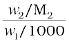 = 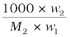 (2.31)
Substituting the value of molality in equation (∆Tb = Kbm) we get
∆Tb = 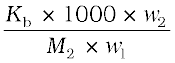
M2 =
Thus, in order to determine M2, molar mass of the solute, known mass of solute in a known mass of the solvent is taken and ∆Tb is determined experimentally for a known solvent whose Kb value is known.
The lowering of vapour pressure of a solution causes a lowering of the freezing point compared to that of the pure solvent. We know that at the freezing point of a substance, the solid phase is in dynamic equilibrium with the liquid phase. Thus, the freezing point of a substance may be defined as the temperature at which the vapour pressure of the substance in its liquid phase is equal to its vapour pressure in the solid phase. A solution will freeze when its vapour pressure equals the vapour pressure of the pure solid solvent as is clear from the figure. According to Raoult’s law, when a non-volatile solid is added to the solvent its vapour pressure decreases and now it would become equal to that of solid solvent at lower temperature. Thus, the freezing point of the solvent decreases.
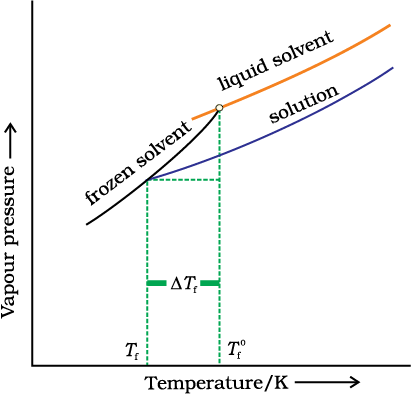
Diagram Shoowing ΔTf depression of the freezing point of a solvent in a solution
Let be the freezing point of pure solvent and be its freezing point when non-volatile solute is dissolved in it. The decrease in freezing point.
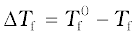 is known as depression in freezing point.
Similar to elevation of boiling point, depression of freezing point (∆Tf) for dilute solution (ideal solution) is directly proportional to molality, m of the solution. Thus,
∆Tf ∝ m
or ∆Tf = Kfm
The proportionality constant, Kf, which depends on the nature of the solvent is known as Freezing Point Depression Constant or Molal Depression Constant or Cryoscopic Constant. The unit of Kf is K kg mol-1. Values of Kf for some common solvents are listed in the table below.
If w2 gram of the solute having molar mass as M2, present in w1 gram of solvent, produces the depression in freezing point ∆Tf of the solvent then molality of the solute is given by the equation.
m = 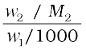
Substituting this value of molality in equation (∆Tf = Kfm) we get:
∆Tf = 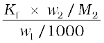
∆T = 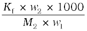
M2 = 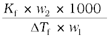
Thus for determining the molar mass of the solute we should know the quantities w1, w2, ∆Tf, along with the molal freezing point depression constant.
The values of Kf and Kb, which depend upon the nature of the solvent, can be ascertained from the following relations.
Kf = 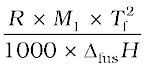
Kb = 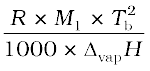
Here the symbols R and M1 stand for the gas constant and molar mass of the solvent, respectively and Tf and Tb denote the freezing point and the boiling point of the pure solvent respectively in kelvin. Further, ∆fusH and ∆vapH represent the enthalpies for the fusion and vapourisation of the solvent, respectively.
| Solvent |
b.p./k |
Kb/K kg mol-1 | f. p./K | Kf/K kg mol-1 |
| Water | 373.15 | 0.52 | 273.0 | 1.86 |
| Ethanol | 351.5 | 1.20 | 155.7 | 1.99 |
| Cyclohexane | 353.74 | 2.79 | 279.55 | 20.00 |
| Benzene | 353.3 | 2.53 | 278.6 | 5.12 |
| Choloroform | 334.4 | 3.63 | 209.6 | 4.79 |
| Carbon tetrachlorble | 350.0 | 5.03 | 250.5 | 31.8 |
| Carbon disulphide | 319.4 | 2.34 | 164.2 | 3.83 |
| Diethyl ether | 307.8 | 2.02 | 156.9 | 1.79 |
| Acetic acid | 391.1 | 2.93 | 290.0 | 3.90 |
There are many phenomena which we observe in nature or at home. For example, raw mangoes shrivel when pickled in brine (salt water); wilted flowers revive when placed in fresh water, blood cells collapse when suspended in saline water, etc. If we look into these processes we find one thing common in all, that is, all these substances are bound by membranes. These membranes can be of animal or vegetable origin and these occur naturally such as pig’s bladder or parchment or can be synthetic such as cellophane. These membranes appear to be continuous sheets or films, yet they contain a network of submicroscopic holes or pores. Small solvent molecules, like water, can pass through these holes but the passage of bigger molecules like solute is hindered. Membranes having this kind of properties are known as semipermeable membranes (SPM).
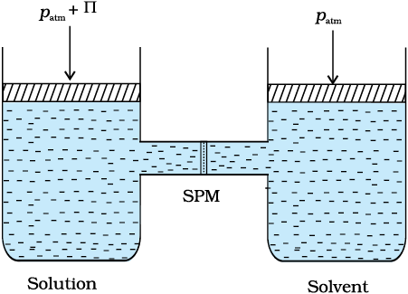
The excess pressure equal to the osmotic pressure must be applied on the solution side to prevent osmosis.
Assume that only solvent molecules can pass through these semi-permeable membranes. If this membrane is placed between the solvent and solution as shown, the solvent molecules will flow through the membrane from pure solvent to the solution. This process of flow of the solvent is called osmosis.
The flow will continue till the equilibrium is attained. The flow of the solvent from its side to solution side across a semipermeable membrane can be stopped if some extra pressure is applied on the solution. This pressure that just stops the flow of solvent is called osmotic pressure of the solution. The flow of solvent from dilute solution to the concentrated solution across a semipermeable membrane is due to osmosis. The important point to be kept in mind is that solvent molecules always flow from lower concentration to higher concentration of solution. The osmotic pressure has been found to depend on the concentration of the solution.
The osmotic pressure of a solution is the excess pressure that must be applied to a solution to prevent osmosis, i.e., to stop the passage of solvent molecules through a semipermeable membrane into the solution. Osmotic pressure is a colligative property as it depends on the number of solute molecules and not on their identity. For dilute solutions, it has been found experimentally that osmotic pressure is proportional to the molarity, C of the solution at a given temperature T. Thus:
π = C R T
Here π is the osmotic pressure and R is the gas constant.
π = (n2 /V) R T
Here V is volume of a solution in litres containing n2 moles of solute. If w2 grams of solute, of molar mass, M2 is present in the solution, then n2 = w2 / M2 and we can write,
π V =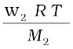
or M2 =
Thus, knowing the quantities w2, T, π and V we can calculate the molar mass of the solute.
Measurement of osmotic pressure provides another method of determining molar masses of solutes. This method is widely used to determine molar masses of proteins, polymers and other macromolecules. The osmotic pressure method has the advantage over other methods as pressure measurement is around the room temperature and the molarity of the solution is used instead of molality. As compared to other colligative properties, its magnitude is large even for very dilute solutions. The technique of osmotic pressure for determination of molar mass of solutes is particularly useful for biomolecules as they are generally not stable at higher temperatures and polymers have poor solubility.
Two solutions having same osmotic pressure at a given temperature are called isotonic solutions. When such solutions are separated by semipermeable membrane no osmosis occurs between them. For example, the osmotic pressure associated with the fluid inside the blood cell is equivalent to that of 0.9% (mass/volume) sodium chloride solution, called normal saline solution and it is safe to inject intravenously. On the other hand, if we place the cells in a solution containing more than 0.9% (mass/volume) sodium chloride, water will flow out of the cells and they would shrink. Such a solution is called hypertonic. If the salt concentration is less than 0.9% (mass/volume), the solution is said to be hypotonic. In this case, water will flow into the cells if placed in this solution and they would swell.
The phenomena mentioned in the beginning of this section can be explained on the basis of osmosis. A raw mango placed in concentrated salt solution loses water via osmosis and shrivel into pickle. Wilted flowers revive when placed in fresh water. A carrot that has become limp because of water loss into the atmosphere can be placed into the water making it firm once again. Water will move into them through osmosis. When placed in water containing less than 0.9% (mass/volume) salt, blood cells collapse due to loss of water by osmosis. People taking a lot of salt or salty food experience water retention in tissue cells and intercellular spaces because of osmosis. The resulting puffiness or swelling is called edema. Water movement from soil into plant roots and subsequently into upper portion of the plant is partly due to osmosis. The preservation of meat by salting and of fruits by adding sugar protects against bacterial action. Through the process of osmosis, a bacterium on salted meat or candid fruit loses water, shrivels and dies.
The direction of osmosis can be reversed if a pressure larger than the osmotic pressure is applied to the solution side. That is, now the pure solvent flows out of the solution through the semi permeable membrane. This phenomenon is called reverse osmosis and is of great practical utility. Reverse osmosis is used in desalination of sea water. When pressure more than osmotic pressure is applied, pure water is squeezed out of the sea water through the membrane. A variety of polymer membranes are available for this purpose.
The pressure required for the reverse osmosis is quite high. A workable porous membrane is a film of cellulose acetate placed over a suitable support. Cellulose acetate is permeable to water but impermeable to impurities and ions present in sea water. These days many countries use desalination plants to meet their potable water requirements.
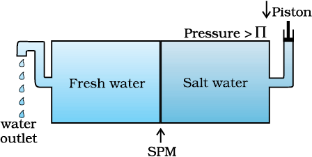
Reverse osmosis occurs when a pressure larger than the osmotic pressure is applied to the solution.